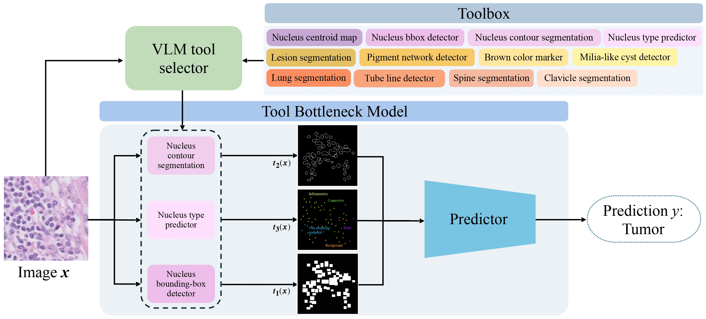

MIDL 2026
1California Institute of Technology 2Stanford University *Equal Contribution

Recent tool-use frameworks powered by vision-language models (VLMs) improve image understanding by grounding model predictions with specialized tools. Broadly, these frameworks leverage VLMs and a pre-specified toolbox to decompose the prediction task into multiple tool calls (often deep learning models) which are composed to make a prediction. The dominant approach to composing tools is using text, via function calls embedded in VLM-generated code or natural language. However, these methods often perform poorly on medical image understanding, where salient information is encoded as spatially-localized features that are difficult to compose or fuse via text alone.
To address this, we propose a tool-use framework for medical image understanding called the Tool Bottleneck Framework (TBF), which composes VLM-selected tools using a learned Tool Bottleneck Model (TBM). For a given image and task, TBF leverages an off-the-shelf medical VLM to select tools from a toolbox that each extract clinically-relevant features. Instead of text-based composition, these tools are composed by the TBM, which computes and fuses the tool outputs using a neural network before outputting the final prediction. We propose a simple and effective strategy for TBMs to make predictions with any arbitrary VLM tool selection. Overall, our framework not only improves tool-use in medical imaging contexts, but also yields more interpretable, clinically-grounded predictors. We evaluate TBF on tasks in histopathology and dermatology and find that these advantages enable our framework to perform on par with or better than deep learning-based classifiers, VLMs, and state-of-the-art tool-use frameworks, with particular gains in data-limited regimes.
1. Toolbox. A set of pretrained tools that each extract a specific clinically-relevant feature as a spatial map. For histopathology, tools capture nucleus-level outputs (bounding boxes, centroids, contours, cell types) via HoVer-Net. For dermatology, tools include a lesion segmenter, dermoscopic structure detectors, and color-based malignancy markers.
2. VLM tool selector. MedGemma selects the top-k most relevant tools for the given image and task, prompted with tool descriptions and a task definition — distilling clinical knowledge without additional supervision.
3. Tool Bottleneck Model (TBM). Selected tool outputs are rasterized into multi-channel spatial maps, concatenated, and passed through a CNN predictor. Trained with tool knockout augmentation, the TBM learns to handle any arbitrary subset of tools at inference time. All tools are frozen; only the TBM is learned.
TBF matches or outperforms strong trained baselines such as EfficientNet — while being interpretable and modular by design. Unlike black-box CNNs, TBF grounds its predictions in clinically-meaningful tools, and its decisions can be directly interrogated by inspecting which tools were selected and how much each contributes.
Matches or exceeds EfficientNet across all three tasks, with top accuracy on Camelyon17 and ISIC-MN.
Predictions are grounded in clinically-relevant tools. Tool importance can be measured via leave-one-out analysis.
New tools can be added to the toolbox without retraining. Tool knockout augmentation handles any subset of tools at inference.
A key advantage of TBF is its strong performance in low-data regimes. Because the model operates on clinically-grounded tool outputs rather than raw pixels, it requires far fewer labeled examples to learn effectively. With only 4 labeled examples, TBF already outperforms EfficientNet — and this advantage persists across all training set sizes, with TBF also exhibiting lower variance across random seeds.
TBF is interpretable: we can measure each tool's contribution via leave-one-out analysis (removing a tool and measuring the performance drop) and compare it against how often MedGemma selects that tool. Tools that are both highly important and frequently selected by the VLM appear in the upper-right. Notably, nucleus contour is the most important tool for histopathology despite not being the most-selected — and pigment network and lesion mask dominate in dermatology, consistent with clinical knowledge.
Dot color reflects overall importance: dark = high, light = low.